Unidad 1
Contenidos de la unidad
Dieciocho sesiones, ocho de ellas de práctica en el ordenador. Al terminar tendrás una página publicada en Internet, un cuaderno de diez ejercicios y una página completa escrita a mano.
- 1.1Internet y la web: qué pasa cuando escribes una dirección
- 1.2PrácticaTu primera página en GitHub Pages
- 1.3HTML: estructura del documento, texto, listas y enlaces
- 1.4PrácticaCuaderno, ejercicios 1 a 5
- 1.5Imágenes, vídeo, tablas y el mapa de una página
- 1.6PrácticaCuaderno, ejercicios 6 a 9
- 1.7Formularios
- 1.8PrácticaCuaderno, ejercicio 10 e índice
- 1.9PrácticaMi videojuego favorito (en el aula) y examen de teoría
Resultado de aprendizaje 1
Qué vas a saber hacer al terminar
Criterio a
Explicar qué pasa cuando escribes una dirección
Navegador, DNS, servidor, HTTP y sus códigos.
Criterio a
Decir qué hace falta para instalar un gestor de contenidos
Servidor web, PHP, base de datos, dominio y DNS.
Criterio a
Publicar una página en Internet gratis
Hosting, dominio y DNS de verdad, con tu dirección en GitHub Pages.
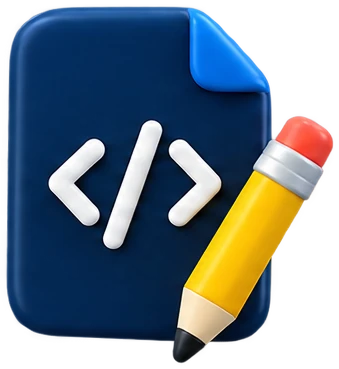
Lenguajes de marcas
Escribir a mano el esqueleto y el texto de una página
Encabezados, párrafos, énfasis, listas y enlaces.
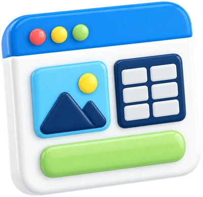
Lenguajes de marcas
Añadir imágenes, tablas y formularios
Figuras con crédito, tablas de datos y un formulario.
Lenguajes de marcas
Leer el código de cualquier página y encontrar sus errores
Con las DevTools del navegador y el validador.
El resultado de aprendizaje 1, instalar gestores de contenidos, sigue en la UT2 con CSS y se completa en la UT3 con WordPress.

Pregunta a la clase
¿Qué aplicaciones web has usado hoy sin darte cuenta?
Desde que te has levantado hasta ahora. Vale todo lo que se abra en un navegador o hable con un servidor.
Ideas
- ●Instagram, TikTok, WhatsApp: la app del móvil habla con un servidor web igual que un navegador.
- ●Classroom, el correo, el banco, Spotify: en el navegador, sin instalar.
- ●El buscador: cada búsqueda es una petición a un servidor y una respuesta con HTML.
- ●Esta presentación: es una página web servida desde GitHub.
Internet y la web
De ARPANET a hoy en doce fechas
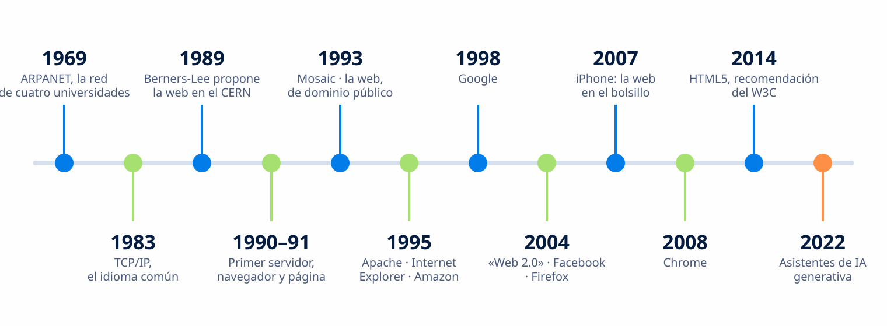
Figura 1.1. Internet existe desde 1969; la web, desde 1990. Son cosas distintas: la web es un servicio que funciona sobre Internet.
3 de 4
Casi tres cuartas partes de la población mundial usa Internet
Todo lo que se instala y se usa en este módulo funciona sobre Internet, desde cualquier sitio con conexión.
2.200 M
Personas que siguen sin conexión, la mayoría en países de renta baja y media
1969
Año de ARPANET, la red de cuatro universidades que fue el origen de Internet
Fuente: Unión Internacional de Telecomunicaciones (ITU), Facts and Figures 2025, itu.int. Consultado el 11 de septiembre de 2026.
Internet y la web
La web es solo uno de los servicios de Internet
Tabla 1.1. Elaboración propia. Telnet y FTP se citan como historia: enviaban las contraseñas sin cifrar y hoy se usan SSH y SFTP.
Internet y la web
Internet no es la web
Internet es la infraestructura: cables, antenas, routers y protocolos. La web es uno de sus servicios: documentos enlazados entre sí que se piden con HTTP y se escriben en HTML.
- —La propuso Tim Berners-Lee en el CERN en 1989 y la puso en marcha en 1990
- —Tres piezas: URL (dónde está), HTTP (cómo se pide) y HTML (cómo se escribe)
- —En 1993 el CERN puso el software de la web en el dominio público: cualquiera puede usarlo sin pagar licencias
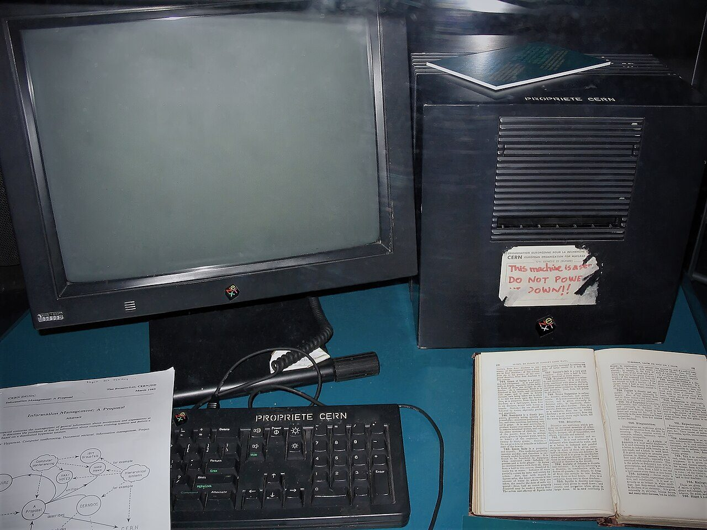
Figura 1.2. El primer servidor web de la historia, con la pegatina que pedía no apagarlo. Haz clic para ampliar.
Pregunta a la clase
¿Cómo era la primera página web de la historia?
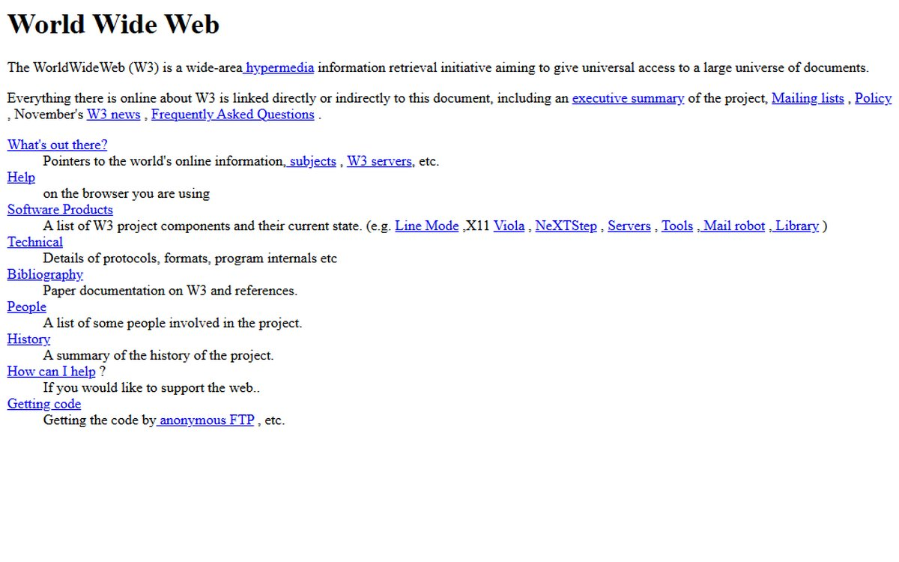
1990
Solo texto y enlaces, sin imágenes ni colores. La escribió Tim Berners-Lee en el CERN y sigue en línea en la misma dirección. Se anunció al público en agosto de 1991.
Internet y la web
Qué pasa cuando escribes una dirección
- 1.Escribes
ejemplo.esy pulsas Intro - 2.El navegador pregunta al DNS qué IP tiene ese dominio
- 3.El DNS responde con la IP del servidor
- 4.El navegador se conecta por HTTPS y pide la página (petición)
- 5.El servidor la devuelve con un código (respuesta: 200 OK)
- 6.El navegador lee el HTML y pinta la página
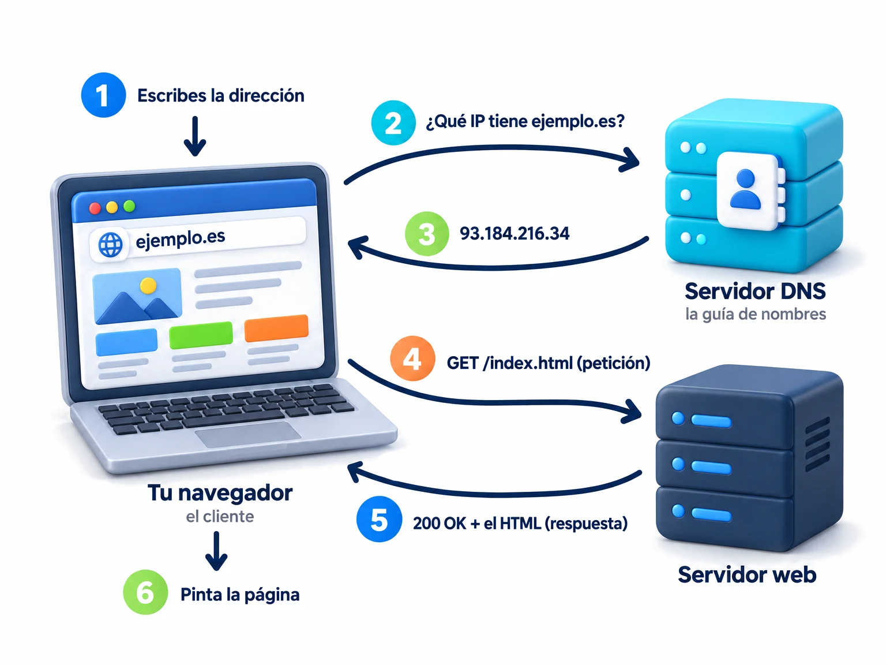
Figura 1.3. Todo esto suele tardar menos de un segundo, y se repite para cada imagen, hoja de estilos o script de la página.
Internet y la web
Anatomía de una dirección
Una URL (Uniform Resource Locator, la dirección de un recurso) dice cómo pedirlo, en qué servidor está y qué archivo es. El puerto casi nunca se escribe: si es el estándar, el navegador lo pone.
La parte que va tras ? son datos para el servidor (lo que envía un formulario). La que va tras # es un punto dentro de la página y no viaja al servidor.
https://www.ejemplo.es:443/cursos/index.html?tema=1#formularios https:// esquema: el protocolo (HTTPS = HTTP cifrado) www. subdominio ejemplo dominio de segundo nivel: el que se registra .es dominio de primer nivel (TLD): .es, .com, .org… :443 puerto (se omite si es el estándar) /cursos/ ruta: carpetas en el servidor index.html archivo (si falta, el servidor busca index) ?tema=1 consulta: datos para el servidor #formularios fragmento: un punto dentro de la página
Internet y la web
HTTP: petición y respuesta
HTTP (HyperText Transfer Protocol, protocolo de transferencia de hipertexto) es el idioma entre el navegador y el servidor web. El navegador pide y el servidor responde con un código y el contenido.
- —GET pide un recurso para leerlo; POST envía datos (un formulario)
- —HTTPS es HTTP cifrado con TLS: el candado. Hoy es lo normal
- —HTML es el lenguaje de la página; HTTP, el protocolo para pedirla. No los confundas
- —Lo define la RFC 9110 (IETF, junio de 2022)
GET /index.html HTTP/1.1 Host: www.ejemplo.es Accept: text/html HTTP/1.1 200 OK Content-Type: text/html; charset=utf-8 Content-Length: 1240 <!DOCTYPE html> <html lang="es"> …
Internet y la web
Los códigos de respuesta que vas a ver
Tabla 1.2. Los códigos y sus nombres son los de la RFC 9110, HTTP Semantics, IETF, junio de 2022 (secciones 15.3.1 y 15.5.5), consultada el 11 de septiembre de 2026. 2xx éxito, 3xx redirección, 4xx error del cliente, 5xx error del servidor.
Internet y la web
Verlo en el navegador: las DevTools
Pulsa F12 en Chrome, Edge o Firefox y se abren las DevTools (herramientas para desarrolladores). En la pestaña Red (Network) recarga la página: verás cada archivo que ha viajado, con su código de estado, su tipo y su tamaño.
- —Elementos: el HTML tal como lo entiende el navegador. Puedes tocarlo, solo en tu pantalla
- —Consola: avisos y errores
- —Red: peticiones, respuestas y códigos
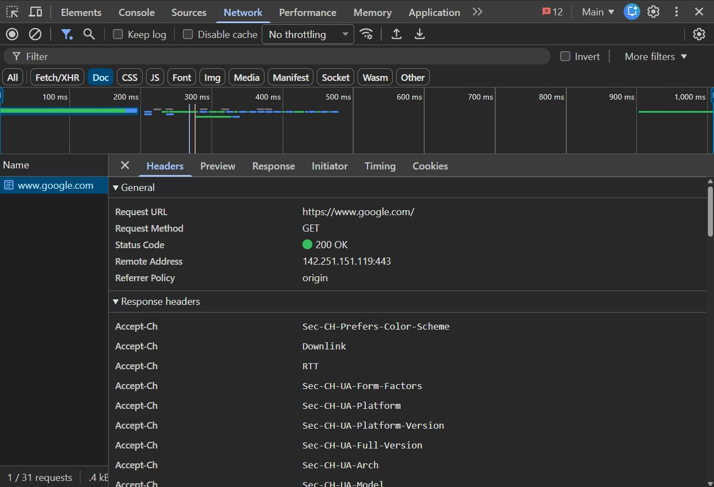
Figura 1.4. La pestaña Red de las DevTools. Lo verás en directo en la práctica 1.2. Haz clic para ampliar.
Internet y la web
Surface web, deep web y dark web no son lo mismo
Surface web
La web «superficial»: lo que indexan los buscadores y cualquiera encuentra con Google. Esta presentación, Wikipedia, la web del instituto.
Deep web
La web «profunda»: lo que no se indexa porque hace falta iniciar sesión o no está enlazado: tu correo, tu banco, Classroom, la intranet de una empresa. Es la mayor parte de la web y es legítima.
Dark web
La web «oscura»: una parte pequeña de la deep web a la que solo se llega con software específico (Tor, dominios .onion). Hay de todo, y buena parte es peligrosa o ilegal.
Definiciones a partir de INCIBE, Instituto Nacional de Ciberseguridad, «Navegadores y Deep Web», incibe.es, 2019. Consultado el 11 de septiembre de 2026.
Internet y la web
Dominio, dirección IP y DNS
- —Dirección IP: el número del servidor. IPv4 son cuatro números de 0 a 255 (
93.184.216.34); como se acabaron, existe IPv6, mucho más larga. - —Dominio: el nombre que la gente recuerda (
ejemplo.es). Se registra por años en un registrador, y nadie más puede tenerlo mientras lo pagues. - —DNS (Domain Name System, sistema de nombres de dominio): el sistema que traduce el nombre a la dirección IP. Sin DNS habría que recordar los números.
Niveles de un dominio
www.ejemplo.es
- .es primer nivel (TLD): territoriales como .es, .fr, .de; genéricos como .com, .org, .net, .edu, .gov
- ejemplo segundo nivel: el que compras
- www subdominio: lo decides tú; puedes tener blog.ejemplo.es, tienda.ejemplo.es…
nslookup www.rae.es ← pregunta al DNS y devuelve la IP ping www.rae.es ← comprueba si el servidor responde
Internet y la web
Tres cosas para que una web esté en Internet
Un servidor: el hosting
Un ordenador siempre encendido y conectado donde se guardan los archivos de la web. Se alquila: compartido (barato, con panel de control), VPS o nube. Gratis para páginas estáticas: GitHub Pages.
Un dominio
El nombre. Se registra por años. Si no lo compras, usas el subdominio que te da el hosting (tuusuario.github.io).
El DNS que los une
Un registro que dice «este nombre apunta a esta IP». Lo configuras en el panel del registrador o del hosting.
Y para conectarte tú hace falta un ISP (Internet Service Provider, el proveedor de acceso): la operadora que te da la fibra o el 5G. Es quien te asigna tu IP y a quien pregunta primero tu ordenador cuando busca un nombre.
Internet y la web
Cliente y servidor
Cliente: pide
- ●El navegador, la app del móvil, el programa de correo
- ●Hace una petición y espera la respuesta
- ●Puede haber miles a la vez pidiendo al mismo servidor
Servidor: espera y responde
- ●Un programa en un ordenador remoto, encendido las 24 horas
- ●Ventajas: todo está centralizado; se cambia o amplía el servidor sin tocar los clientes
- ●Inconvenientes: si cae, caen todos; si le llegan demasiadas peticiones, se satura
Internet y la web
Dos niveles y tres niveles
Con dos niveles, el servidor devuelve archivos tal cual: es una página estática. Con tres niveles, entre el cliente y los datos hay un programa que genera la página en cada petición: es una página dinámica.
Tu página de GitHub Pages es de dos niveles. WordPress y Moodle, de tres: por eso necesitan PHP y una base de datos.
Vídeo 1.2 · Fazt, «Modelo Cliente Servidor», 4:40. Cliente, servidor y petición-respuesta con ejemplos de cada día.
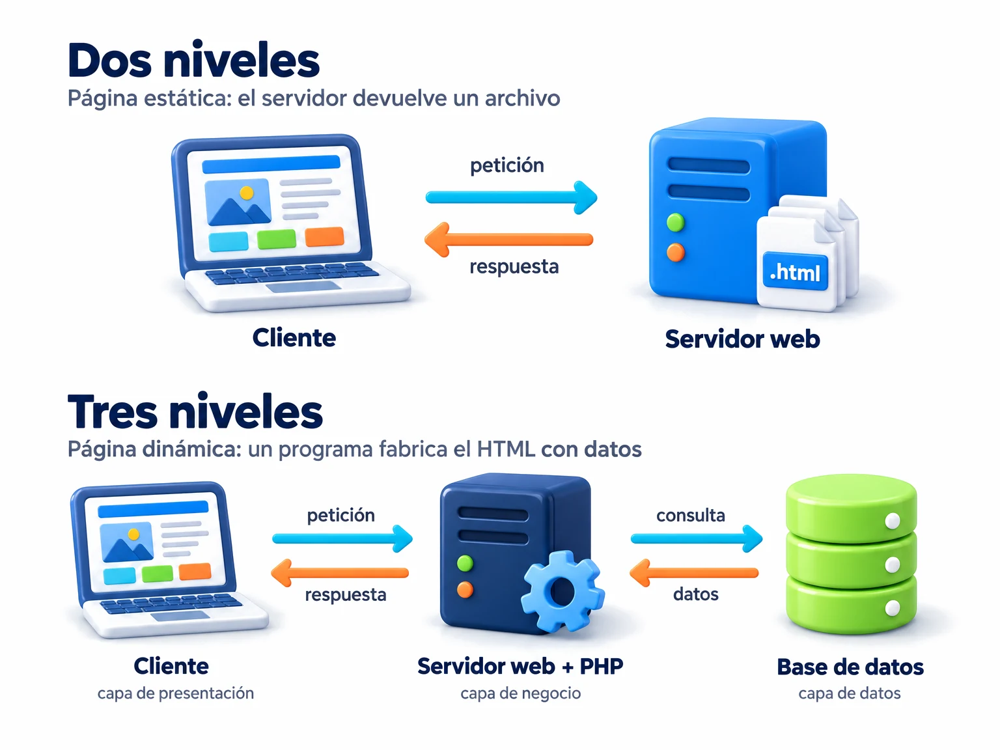
Figura 1.5. Capa de presentación (cliente), capa de negocio (servidor de aplicaciones) y capa de datos (base de datos).
69 %
De la navegación mundial se hace con Chrome
El navegador es el cliente de la web: pide la página, la recibe, interpreta el HTML, aplica el CSS, ejecuta el JavaScript y la pinta. Y trae las DevTools.
15,8 %
Safari, de Apple
5,4 %
Edge, de Microsoft
3,0 %
Firefox, de Mozilla
Fuente: StatCounter, Browser Market Share Worldwide, agosto de 2026. Consultado el 11 de septiembre de 2026. Solo quedan tres motores: Blink (Chrome, Edge, Opera), WebKit (Safari) y Gecko (Firefox).
Internet y la web
Qué hace un navegador
Pide
Resuelve el nombre y envía la petición HTTP.
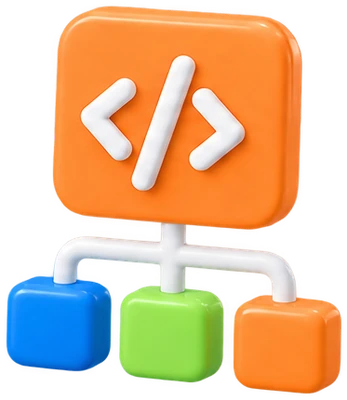
Interpreta el HTML
Construye el árbol de elementos de la página.
Aplica el CSS
Colores, tipografía, colocación (UT2).
Ejecuta el JavaScript
Lo que se mueve y reacciona (UT6).
Pinta
Y vuelve a empezar con cada imagen o archivo que haga falta.
Internet y la web
El servidor web: el programa que responde
Un servidor web es un programa que espera peticiones HTTP y devuelve las páginas que tiene alojadas. Estos son los que más se usan.
Tabla 1.3. Fuente: W3Techs, Usage statistics of web servers, w3techs.com, 11 de septiembre de 2026. Porcentaje de sitios web cuyo servidor se conoce; una web puede usar más de uno.
Internet y la web
Lo que se configura en un servidor web
Apache se configura en un archivo de texto, httpd.conf. No vas a instalarlo ahora, pero lo verás dentro del paquete de Moodle en la UT4 y en cualquier hosting.
- —DocumentRoot: la carpeta pública. Lo que dejes ahí se ve desde fuera
- —DirectoryIndex: el archivo que se sirve si no pides ninguno. Por eso tu página principal se llama
index.html - —Listen: el puerto. 80 para HTTP, 443 para HTTPS
# Puerto en el que escucha Listen 80 # Carpeta pública: lo que hay aquí se sirve DocumentRoot "C:/xampp/htdocs" # Archivo por defecto de cada carpeta DirectoryIndex index.html index.php # Página propia para el error 404 ErrorDocument 404 /no-encontrado.html # Dónde se apuntan los errores ErrorLog "logs/error.log"
Internet y la web
Página estática y página dinámica
Estática
El servidor devuelve el archivo HTML tal cual está guardado. Todo el mundo ve lo mismo hasta que alguien edita el archivo.
- 1Petición: GET /index.html
- 2El servidor busca el archivo en la carpeta pública
- 3Respuesta: 200 y el archivo
Tu página de GitHub Pages. Esta presentación.
Dinámica
Un programa en el servidor genera el HTML en cada petición con datos de una base de datos. Cada usuario puede ver algo distinto.
- 1Petición: GET /noticias.php
- 2El servidor web pasa la petición a PHP
- 3PHP consulta la base de datos (MariaDB, MySQL, PostgreSQL)
- 4PHP monta el HTML con los datos
- 5Respuesta: 200 y el HTML recién generado
WordPress, Moodle, tu banco, Classroom.
PHP sigue siendo el lenguaje de servidor de casi siete de cada diez webs cuyo lenguaje se conoce (69,9 %). Fuente: W3Techs, 11 de septiembre de 2026.
Internet y la web
Qué hace falta para instalar un gestor de contenidos
Un CMS (Content Management System, gestor de contenidos) como WordPress o Moodle es una aplicación web dinámica. Antes de instalarlo hay que tener esto.
1 · Servidor web
Apache, Nginx o LiteSpeed, en un hosting o en tu ordenador.
2 · PHP
En la versión que pida el CMS. Es el programa que genera las páginas.
3 · Base de datos
MariaDB o MySQL, con un usuario y una contraseña para el CMS.
4 · Dominio y DNS
Para que los usuarios lleguen a la web. Y HTTPS con certificado, que casi todos los hostings incluyen gratis.
5 · Acceso al servidor
Un panel de control (cPanel) o SFTP para subir los archivos y crear la base de datos.
6 · Los archivos del CMS
Descargados de su web oficial o instalados desde el panel con un clic.
Para probar en tu ordenador hay paquetes «todo en uno» que traen servidor, PHP y base de datos: XAMPP (Apache, MariaDB y PHP), WordPress Studio y el paquete de Moodle para Windows. Los usaremos en las unidades 3 y 4.
Internet y la web
Un servicio web: una aplicación habla con otra
No todo lo que responde un servidor web es una página. Un servicio web (una API, Application Programming Interface) devuelve datos para que los use otro programa: la app del móvil, otra web, un asistente de IA.
GET https://pokeapi.co/api/v2/pokemon/pikachu
- —REST: cada cosa tiene su URL y se pide con GET, POST…
- —JSON: el formato de la respuesta, texto con claves y valores
- —Abre la URL en el navegador y verás la respuesta tal cual
{
"name": "pikachu",
"id": 25,
"height": 4,
"weight": 60,
"types": [ { "type": { "name": "electric" } } ],
"abilities": [
{ "ability": { "name": "static" } },
{ "ability": { "name": "lightning-rod" } }
],
"sprites": {
"front_default": "https://raw.githubusercontent.com/…/25.png"
}
}
PokeAPI, pokeapi.co, servicio público y gratuito. Consultado el 11 de septiembre de 2026.
Internet y la web
Las etapas de la web, de la 1.0 a la 4.0
Tabla 1.4. Elaboración propia. Las etapas no son versiones oficiales: son una forma de contar cómo ha cambiado el uso de la web.
Pregunta a la clase
¿Qué pasa cuando compartes un enlace por Discord o WhatsApp?
Aparece una vista previa del enlace con título, imagen y descripción. ¿De dónde sale? Tú no la has escrito.
Lo que ocurre
- ●La app pide la página igual que un navegador, pero no la pinta.
- ●Lee unas etiquetas del
<head>pensadas para máquinas: título, descripción e imagen de la página (se llaman Open Graph). - ●Monta la vista previa con esos datos. Eso es web semántica: información que entiende un programa.
- ●Si la página no lleva esas etiquetas, la vista previa sale vacía o con lo primero que encuentra.
<meta property="og:title" content="SuperTuxKart"> <meta property="og:description" content="Carreras de karts libres"> <meta property="og:image" content="https://…/portada.jpg">
Internet y la web
La inteligencia artificial y la web
- —En el editor: asistentes que completan y escriben código HTML, CSS y JavaScript.
- —Generadores de webs completas a partir de una descripción, y IA dentro de WordPress y de las suites ofimáticas.
- —Buscadores que responden en vez de enlazar, y agentes que navegan y actúan por ti.
- —Qué cambia en la profesión: la IA escribe HTML, pero solo quien lo entiende puede pedirlo bien, comprobarlo y corregirlo. Por eso aquí se aprende a mano.
Norma del módulo. La IA no se usa en clase salvo que se indique expresamente. En esta unidad no se indica: HTML se aprende escribiéndolo.
Para el debate
Si el asistente te responde directamente, ¿quién visita las páginas? ¿De qué viven las webs que escriben lo que la IA resume? ¿Es el fin de la web tal como la conocemos?
Internet y la web
Redes sociales y aplicaciones móviles
Redes sociales
- ●Horizontales, para todo: Instagram, TikTok, X, Facebook. Verticales, por tema: LinkedIn (trabajo), Strava (deporte), Letterboxd (cine).
- ●Tres riesgos: privacidad (revisa qué ve quién), suplantación de identidad, y pérdida de control de lo que publicas: concedes una licencia de uso.
- ●Tus derechos: el RGPD (en vigor desde 2018) te permite acceder a tus datos, corregirlos y pedir que los borren.
Apps y web apps
- ●App nativa: se instala desde la tienda y se programa con el SDK de cada sistema (Android, iOS). Mejor experiencia de usuario (UX).
- ●Web app: se usa desde el navegador y se adapta a la pantalla con diseño responsive (adaptable, UT2). Una sola versión para todo.
- ●PWA (progressive web app): una web app que se instala desde el navegador y funciona casi como nativa.
Tu primera página en Internet
Crea tu cuenta de GitHub, un repositorio llamado tuusuario.github.io y un archivo index.html con la estructura mínima: un título, dos párrafos sobre ti, una lista y un enlace. Activa GitHub Pages y comprueba que tu dirección funciona.
La página es pública: nada de datos personales sensibles. Nombre de pila y aficiones, sí; dirección, teléfono o fotos de otras personas, no.
Duración
2 sesiones
Modalidad
Individual, en el aula
Entrega
URL pública y dos capturas en Classroom
Material
Navegador y cuenta de GitHub
- 1.Crea la cuenta y el repositorio público con tu nombre de usuario
- 2.Crea index.html desde la web de GitHub y pega el esqueleto de la diapositiva siguiente
- 3.Activa Pages, espera y abre tu dirección. Si funciona, cambia algo en la página y vuelve a guardar
Publicar en GitHub Pages, paso a paso
Cuenta
github.com, con el correo del centro. Elige bien el nombre de usuario: será tu dirección.
Repositorio
New repository, público, llamado exactamente tuusuario.github.io, en minúsculas.
Archivo
Add file, Create new file, nombre index.html. Pega el esqueleto y pulsa Commit changes.
Pages
Settings, apartado Pages. En Build and deployment, Source: Deploy from a branch, rama main, carpeta /(root). Save.
Espera
Uno o dos minutos (GitHub dice que hasta diez). Recarga la página de Settings hasta ver la dirección.
Compruébala
Abre https://tuusuario.github.io en el ordenador y en el móvil.
Procedimiento según la documentación de GitHub Pages, docs.github.com, consultada el 11 de septiembre de 2026. Gratis para repositorios públicos; cada sitio puede ocupar hasta 1 GB.
El esqueleto que vas a pegar
Pégalo tal cual y cambia solo el texto: el título de la pestaña, el encabezado, los párrafos, la lista y el enlace. Lo que hace cada línea lo vemos en el bloque 1.3.
Las líneas marcadas son las únicas que se ven en la página.
<!DOCTYPE html>
<html lang="es">
<head>
<meta charset="utf-8">
<meta name="viewport" content="width=device-width, initial-scale=1">
<title>La página de Ana</title>
</head>
<body>
<h1>Hola, soy Ana</h1>
<p>Estudio Sistemas Microinformáticos y Redes.</p>
<p>Esta es mi primera página publicada en Internet.</p>
<ul>
<li>Me gusta el baloncesto</li>
<li>Y los videojuegos de carreras</li>
</ul>
<a href="https://supertuxkart.net">Mi juego favorito</a>
</body>
</html>
Lo que acabas de hacer, con las palabras del bloque 1.1
Mírala por dentro
Abre tu página y pulsa F12. Vas a ver lo que el navegador ve: el HTML tal como lo entiende, cada petición y cada código de respuesta.
Lo que cambies en Elementos solo cambia en tu pantalla: el archivo del servidor sigue igual. Para cambiarlo de verdad hay que editarlo en GitHub.
Duración
1 sesión
Modalidad
Individual, en el aula
Entrega
URL y dos capturas en Classroom
Material
Navegador con DevTools
- 1.En Elementos, localiza tu h1 y cambia el texto. Mira la página. Recarga: vuelve el original
- 2.En Red, recarga y anota el código de estado de index.html. Captura
- 3.Pide
tuusuario.github.io/nada.html. Anota el código. Captura - 4.Sube a Classroom la URL y las dos capturas, con una frase que explique cada una
Lo que tienes que ver
200 OK. El servidor ha encontrado la página y la ha devuelto. Fíjate también en el tamaño y en el tiempo.
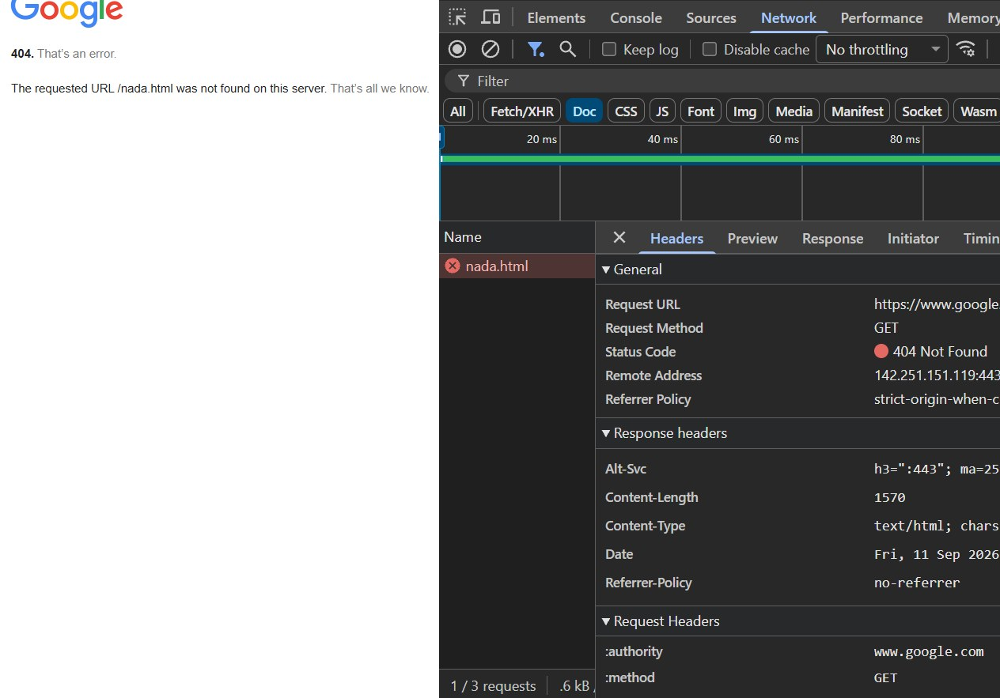
404 Not Found. El archivo no existe. Cada servidor muestra su propia página de error: aquí la de Google; en la práctica verás la de GitHub Pages y en la UT3, la de WordPress.
HTML
Qué es HTML
HTML (HyperText Markup Language) es un lenguaje de marcas: texto normal con etiquetas que dicen qué es cada cosa, un título, un párrafo, un enlace. No dice cómo se ve (eso es CSS) ni toma decisiones (eso es JavaScript). No es un lenguaje de programación.
- —Viene de GML (IBM, 1969) y de SGML (norma ISO, 1986). De SGML salen HTML y XML
- —HTML nace en 1991 con la web; HTML5 llega en 2014. Hoy es un estándar vivo que mantiene el WHATWG
- —La referencia que usaremos: MDN Web Docs, en español
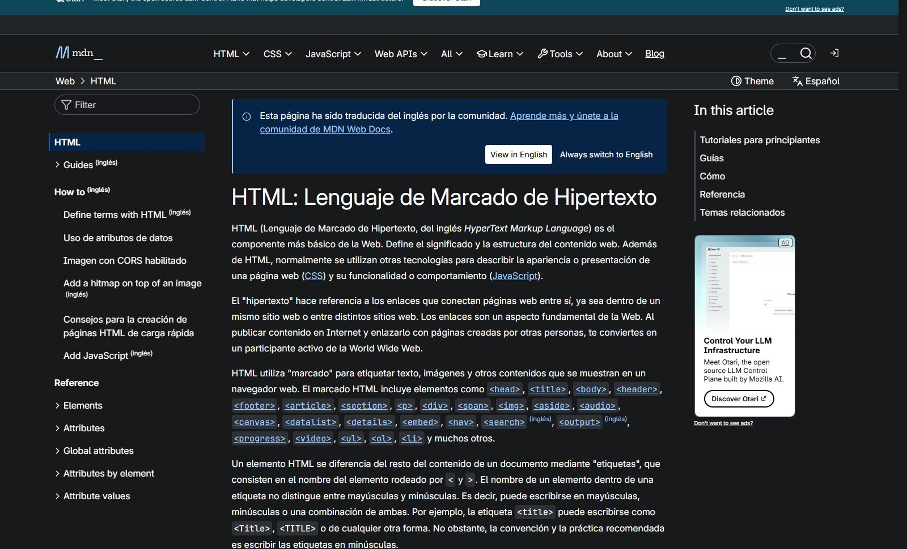
Figura 1.6. La referencia de HTML en MDN Web Docs. Es la referencia para consultar cualquier etiqueta.
Vídeo 1.1. Gilada, «El secreto de internet que siempre tuviste frente a tus ojos», YouTube, julio de 2025, 6:35. Se ve entero.
HTML
Vídeo: por qué existe HTML
Mientras lo ves, apunta una respuesta breve a cada pregunta. Las comentamos al terminar.
- 1.¿Qué problema tenían en el CERN y cómo lo resolvió Tim Berners-Lee?
- 2.¿Por qué en los años 90 una página podía funcionar en un navegador y romperse en otro? ¿Para qué sirvió un estándar?
- 3.XHTML era «más limpio y más estricto». ¿Por qué fracasó y quién empezó HTML5?
- 4.¿Qué significa que HTML sea hoy un «estándar vivo»?
HTML
Cada lenguaje tiene un trabajo
HTML: qué hay
La estructura y el contenido. Un título, tres párrafos, una lista, una imagen, un formulario.
<h2>Pantallas</h2>
CSS: cómo se ve
Colores, tipografía, tamaños, espacios, columnas y cómo se adapta al móvil. Unidad 2.
h2 { color: #041c3f; }
JavaScript: qué hace
Lo que se mueve y responde: un menú que se despliega, un formulario que avisa. Unidad 6.
boton.addEventListener(…)
En esta unidad solo HTML. Las páginas se verán en blanco y negro y en una columna: es normal, y así se ve mejor lo que hace cada etiqueta.
HTML
La misma página, sin CSS y con CSS
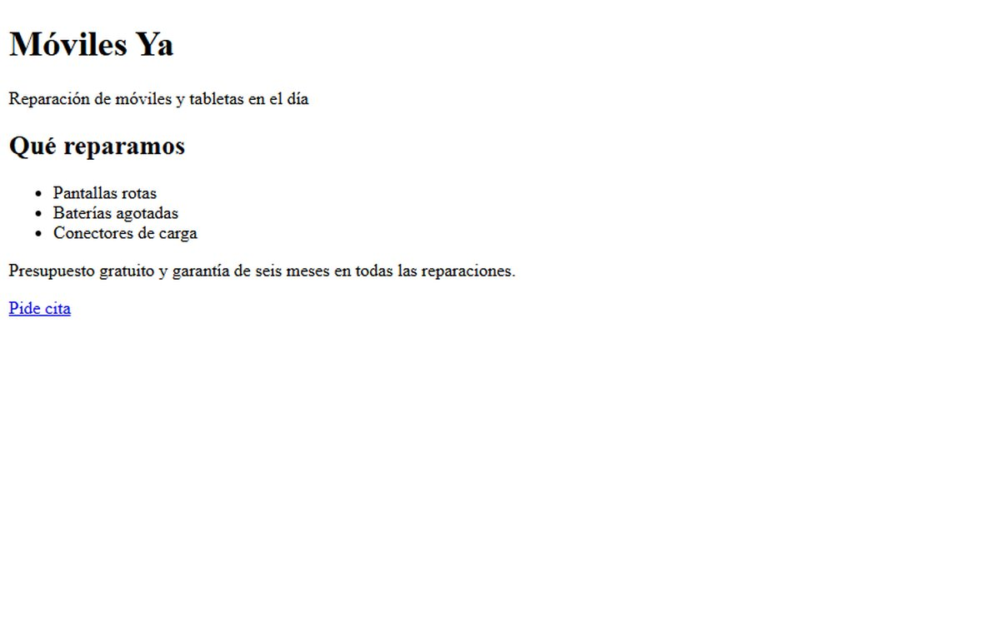
Solo HTML. El navegador aplica sus estilos por defecto: Times, negro sobre blanco, todo en una columna. Así se verán tus páginas en esta unidad.
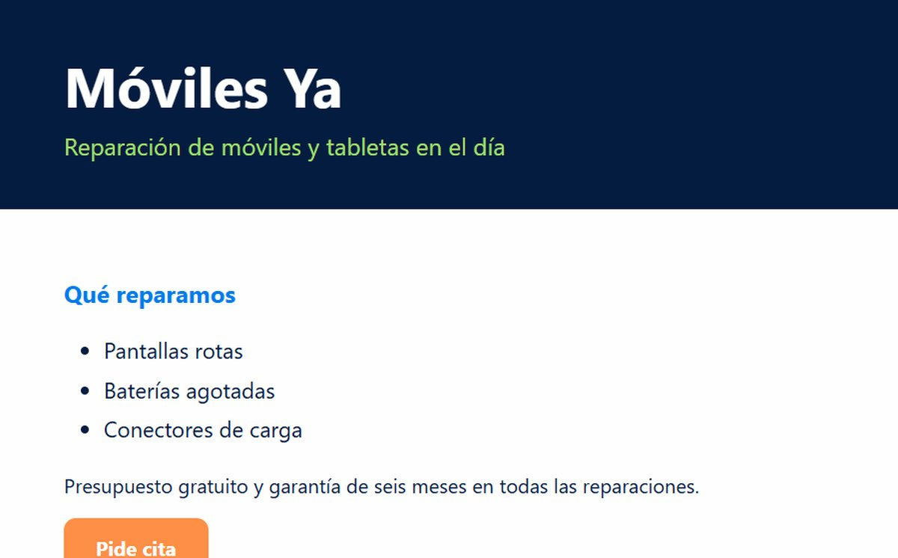
HTML y CSS. El mismo archivo HTML más una hoja de estilos de diez reglas. Lo harás en la unidad 2 sobre esta misma página.
HTML
Con qué se escribe HTML
Tabla 1.5. Atom, Brackets y KompoZer salen en muchos libros y ya no existen o no se mantienen. En 2026 el editor habitual es Visual Studio Code.
HTML
Anatomía de una etiqueta
- —Elemento: todo, desde la apertura hasta el cierre
- —Etiqueta de apertura: el nombre entre
<y> - —Atributo: nombre="valor", dentro de la apertura, siempre con comillas
- —Contenido: lo que hay entre las dos etiquetas
- —Etiqueta de cierre: igual, con una barra
- —Elementos vacíos sin contenido ni cierre:
<br><hr><img><meta><input>
<a href="https://www.rae.es" target="_blank">Diccionario</a>
<a
apertura y nombre
href="…"
atributo y valor
target="…"
otro atributo
Diccionario
contenido
</a>
cierre
<img src="foto.jpg" alt="Una foto"> <br> <hr>
HTML
El esqueleto de una página, línea a línea
<!DOCTYPE html> <!-- HTML actual. Siempre la primera línea --> <html lang="es"> <!-- idioma de la página --> <head> <!-- lo que NO se ve --> <meta charset="utf-8"> <!-- codificación: tildes y eñes --> <meta name="viewport" content="width=device-width, initial-scale=1"> <title>Reparación de móviles</title> <!-- pestaña y buscadores --> <meta name="description" content="Reparamos tu móvil en el día"> <meta name="author" content="Ana García"> </head> <body> <!-- lo que SÍ se ve --> <h1>Reparación de móviles</h1> <p>Pantallas y baterías en el día.</p> </body> </html>
Los comentarios <!-- … --> no se muestran. El viewport evita que el móvil encoja la página; lo entenderás del todo en la unidad 2.
HTML
Siete normas para escribir HTML
Minúsculas. <p>, no <P>. Las dos formas funcionan, pero la convención es escribir en minúsculas.
Comillas en los valores. href="contacto.html". Sin comillas funciona solo en algunos casos; con comillas, siempre.
Cierra lo que abres. Cada <p> tiene su </p>. Menos los elementos vacíos.
Anida bien. Lo último que se abre es lo primero que se cierra: <p><strong>así</strong></p>.
Los espacios se colapsan. Diez espacios o tres saltos de línea se ven como uno. Para separar párrafos, <p>; para un salto, <br>.
Indenta. Lo que va dentro, más a la derecha. Se lee y se corrige mejor. VS Code lo hace con Shift+Alt+F.
El navegador no avisa de los errores. Ignora lo que no entiende y pinta lo que puede: una página con errores puede verse casi bien. Por eso se pasa por el validador (lo verás en el bloque 1.5) y se mira en las DevTools.
HTML
Encabezados y párrafos
<h1>SuperTuxKart</h1> <p>Carreras de karts con las mascotas del software libre.</p> <h2>Historia</h2> <p>Nació en 2004 como continuación de TuxKart. Sigue actualizándose.</p> <h2>Dónde descargarlo</h2> <p>Windows, Linux, macOS y Android.<br> Gratis y sin anuncios.</p> <hr> <p>Página hecha por Ana.</p>
- —
<h1>a<h6>: títulos por importancia. Un solo h1 por página y sin saltarse niveles - —
<p>: párrafo. Los saltos de línea del código no cuentan - —
<br>: salto dentro de un párrafo (una dirección, un poema). No para separar párrafos - —
<hr>: cambio de tema
HTML
Énfasis con significado
<p>Entrega antes del <strong>viernes</strong>.</p> <p>No es <em>difícil</em>, es largo.</p> <p><small>Precios sin IVA.</small></p> <p>Busca la palabra <mark>servidor</mark>.</p> <p>Piso de 90 m<sup>2</sup> · H<sub>2</sub>O</p> <p>Escribe <code>index.html</code> y pulsa <kbd>F5</kbd>.</p> <p>El <abbr title="Sistema de nombres de dominio"> DNS</abbr> traduce nombres.</p> <blockquote cite="https://www.rae.es"> Red informática mundial, descentralizada… </blockquote>
<b>, <i> y <u>? Existen y son válidos, pero tienen un significado concreto (llamar la atención, un término técnico, una anotación). Si solo quieres negrita o cursiva por estética, eso es CSS.HTML
Lo que verás en páginas viejas y no debes escribir
Tabla 1.6. HTML 4 mezclaba contenido y aspecto; desde HTML5 el aspecto va en CSS. Fuente: MDN Web Docs, referencia de elementos HTML, apartado de elementos obsoletos, consultada el 11 de septiembre de 2026.
HTML
Tildes, eñes y caracteres reservados
<p>Con UTF-8 escribes tal cual: canción, año, ¿qué?, €, «así».</p> <p>Las entidades son para lo que HTML se reserva: 3 < 5, un & en un nombre, y la etiqueta <p> escrita como texto.</p> <p>© 2026 Ana García. Precio: 12 € (el espacio de no separación no se parte al final de la línea).</p>
HTML
Texto preformateado
<pre> es la excepción a la norma 5: respeta los espacios y los saltos de línea tal como los escribas, con letra de ancho fijo.
Sirve para mostrar código (con <code> dentro) o un texto con formato propio, como un fragmento de configuración. No para dibujos ni firmas: no se adapta a la pantalla del móvil.
<p>Así se arranca el servidor:</p> <pre><code>Listen 80 DocumentRoot "C:/xampp/htdocs" DirectoryIndex index.html</code></pre>
HTML
Listas: con viñetas, numeradas y de definiciones
<h2>Personajes</h2>
<ul>
<li>Tux, el protagonista</li>
<li>Gnu, su mentor</li>
<li>Nolok, el villano
<ul>
<li>Tiene su propio castillo</li>
</ul>
</li>
</ul>
<h2>Cómo instalarlo</h2>
<ol type="A">
<li>Descarga el instalador</li>
<li>Ejecútalo</li>
<li>Elige un personaje</li>
</ol>
<h2>Glosario</h2>
<dl>
<dt>HTML</dt>
<dd>Lenguaje de marcas de la web.</dd>
<dt>URL</dt>
<dd>Dirección de un recurso.</dd>
</dl>
- —
<ul>sin orden,<ol>numerada (start,type="A"o"I"),<dl>de definiciones con término y definición - —Cada
<li>va dentro de su lista. Una lista puede ir dentro de un<li>
HTML
Enlaces: el hipertexto
<h2 id="inicio">Enlaces</h2>
<ul>
<li><a href="https://developer.mozilla.org/es/">
A otra web (absoluto)</a></li>
<li><a href="contacto.html">
A otra página de mi sitio (relativo)</a></li>
<li><a href="mailto:ana@ejemplo.es">
Escríbeme</a></li>
<li><a href="tel:+34600000000">
Llámame</a></li>
<li><a href="manual.pdf" download>
Descarga el manual</a></li>
<li><a href="https://supertuxkart.net"
target="_blank" rel="noopener">
En pestaña nueva</a></li>
<li><a href="#inicio">Volver arriba (ancla)</a></li>
</ul>
- —Absoluto: la URL completa. Relativo: la ruta desde la página actual
- —Ancla: pones un
iden el destino y enlazas con#id. Es el fragmento de la URL - —
target="_blank"abre en pestaña nueva; añaderel="noopener"
HTML
Rutas relativas
- —Mismo nivel: el nombre.
contacto.html - —Bajar a una carpeta:
img/portada.jpg - —Subir un nivel:
../index.html - —Nunca
C:\Users\ana\...: en el servidor esa ruta no existe
Nombres de archivo en minúsculas, sin espacios ni tildes. El servidor suele ser Linux: Foto.JPG y foto.jpg son archivos distintos, y un espacio rompe la ruta.
mi-web/
├── index.html // <a href="paginas/contacto.html">
├── paginas/ // <img src="img/logo.png">
│ ├── contacto.html // desde aquí: <a href="../index.html">
│ └── servicios.html // <img src="../img/logo.png">
└── img/
├── logo.png
└── portada.jpg
HTML
Cómo se completa un fragmento
En el ejercicio de la diapositiva siguiente falta una etiqueta o un atributo. Tres pasos:
- 1.Lee lo que hay alrededor del hueco: ¿es una lista, un enlace, la cabecera?
- 2.Piensa qué elemento o atributo va ahí
- 3.Escribe solo el nombre, sin
<ni>. Pista te dice de qué familia es
Ejemplo resuelto
<___ href="https://www.rae.es">Diccionario</___>
href y un texto que se puede pulsar: es un enlace. La etiqueta de los enlaces es a. Solución: a.
Completa la etiqueta que falta
Cada vez sale un fragmento distinto. Comprobar corrige, Pista te dice de qué familia es, Resolver lo rellena y Otro ejercicio cambia de fragmento. Cuenta los aciertos seguidos sin pista.
Cuaderno de ejercicios: del 1 al 5
Un pen por ejercicio en CodePen, con el número y el nombre en el título. Cada ejercicio añade una cosa nueva a lo que ya sabes. Los pens son públicos: usa datos inventados si no quieres contar algo.
Duración
2 sesiones
Modalidad
Individual, en el aula
Entrega
Con el índice, al final de la unidad
Material
CodePen y esta presentación
- 01Un título y dos párrafos. Tema: tú. Tu nombre con
h1y dos párrafos conp: qué estudias y qué te gusta. Las etiquetas dicen al navegador qué es cada cosa; sin ellas todo saldría seguido. - 02Subtítulos y palabras que destacan. Tema: tu ciudad. h1 y tres apartados con
h2(dónde está, qué ver, qué se come), cada uno con un párrafo; una palabra importante enstrongy un sitio o un plato enem. h2 son los capítulos; strong es «importante» y em «con énfasis». El aspecto, con CSS. - 03Una lista. Tema: tu serie o película. h1, un párrafo de qué va y un h2 «Personajes» con una lista
ul: unlipor personaje, con el nombre en strong. Cosas del mismo tipo van en lista; las viñetas las pone el navegador. - 04Enlaces. Sobre el pen del 3. Un h2 «Para saber más» y una lista numerada
olcon dos enlacesa(href): la web oficial y Wikipedia. El texto dice a dónde va, nada de «pincha aquí». El enlace es lo que hace que la web sea una web. - 05De memoria y con reloj. Tema: tu equipo o tu grupo. En 25 minutos y sin mirar los otros pens: título, dos apartados, un strong y un em, una lista de puntos y una numerada con dos enlaces. Para ver si ya te sale solo; mejor hoy que en el examen.
Imágenes, tablas y semántica
Imágenes
<h2>Capturas</h2>
<img src="https://raw.githubusercontent.com/PokeAPI/sprites/master/sprites/pokemon/25.png"
alt="Pikachu de frente" width="192" height="192">
<p>Una imagen que es un enlace:</p>
<a href="https://pokeapi.co">
<img src="https://raw.githubusercontent.com/PokeAPI/sprites/master/sprites/pokemon/1.png"
alt="Bulbasaur de frente" width="96" height="96">
</a>
<p>Si la ruta falla, se ve el texto alternativo:</p>
<img src="no-existe.jpg" alt="Foto del circuito">
- —
src: la ruta, relativa o absoluta.alt(texto alternativo): obligatorio, describe la imagen para quien no la ve y aparece si falla - —
widthyheightreservan el hueco antes de que cargue. El tamaño de verdad se ajusta con CSS - —Imagen dentro de un
<a>: imagen que es un enlace
Las imágenes del ejemplo son los sprites de PokeAPI (pokeapi.co), servidos desde GitHub. Consultado el 11 de septiembre de 2026.
Imágenes, tablas y semántica
Qué formato usar para cada imagen
Tabla 1.7. Una imagen de una web debería pesar decenas o pocos cientos de kilobytes. La foto del móvil, de varios megabytes, se reduce antes de subirla.
Imágenes, tablas y semántica
Una figura con su pie y su crédito
<figure>
<img src="https://upload.wikimedia.org/wikipedia/commons/d/d1/First_Web_Server.jpg"
alt="El primer servidor web, un ordenador NeXT" width="300">
<figcaption>
El primer servidor web, en el CERN. Foto: Coolcaesar, Wikimedia Commons, CC BY-SA 3.0.
</figcaption>
</figure>
Imágenes, tablas y semántica
Vídeo y audio
<h2>Tráiler</h2>
<video controls width="320" poster="portada.jpg">
<source src="trailer.webm" type="video/webm">
<source src="trailer.mp4" type="video/mp4">
Tu navegador no reproduce vídeo.
</video>
<h2>Banda sonora</h2>
<audio controls>
<source src="tema.mp3" type="audio/mpeg">
</audio>
<!-- Arranca sin pulsar nada solo si va sin sonido -->
<video autoplay muted loop width="320"
src="fondo.mp4"></video>
- —
controlspone los botones;poster, la imagen de portada;<source>ofrece varios formatos y el navegador elige - —Los navegadores bloquean el autoplay con sonido: solo arranca por sí mismo si lleva
muted - —Formatos: MP4 y WebM; MP3 y OGG. Un vídeo pesa mucho: los de YouTube se incrustan, no se suben
Imágenes, tablas y semántica
Incrustar un vídeo o un mapa de otra web
<h2>Cómo se juega</h2>
<!-- Código para insertar (embed) de YouTube:
Compartir, Insertar -->
<iframe width="400" height="225"
src="https://www.youtube-nocookie.com/embed/aqz-KE-bpKQ"
title="Vídeo de YouTube"
allowfullscreen></iframe>
<h2>Dónde estamos</h2>
<!-- Código para insertar (embed) de OpenStreetMap:
Compartir, HTML (Google Maps da uno parecido) -->
<iframe width="400" height="225"
src="https://www.openstreetmap.org/export/embed.html?bbox=-4.74,41.64,-4.70,41.66"
title="Mapa"></iframe>
- —Un
<iframe>es una ventana a otra página dentro de la tuya. Copias el código que te da la web y listo - —Solo
src,width,height,titleyallowfullscreen.frameborderyscrollingson obsoletos - —Los
<frameset>que dividían la ventana en frames (marcos) son historia
Ordena los pasos
Repaso del bloque 1.1. Los pasos salen desordenados: pon a cada uno su número. Piensa qué tiene que existir antes de cada paso.
Otro ejercicio cambia de procedimiento: la petición de una página, publicar en GitHub Pages o escribir y comprobar una página.
Imágenes, tablas y semántica
Tablas: datos en filas y columnas
<table>
<caption>Ficha técnica</caption>
<thead>
<tr>
<th>Dato</th>
<th>Valor</th>
</tr>
</thead>
<tbody>
<tr>
<td>Primera versión</td>
<td>2004</td>
</tr>
<tr>
<td>Plataformas</td>
<td>Windows, Linux, macOS, Android</td>
</tr>
<tr>
<td>Licencia</td>
<td>GPL</td>
</tr>
</tbody>
</table>
- —
<tr>es una fila;<th>, una celda de cabecera;<td>, una celda de datos.<caption>es el título - —
<thead>y<tbody>separan la cabecera del cuerpo - —Sin líneas ni colores: es normal. Los bordes se ponen con CSS en la unidad 2
Imágenes, tablas y semántica
Celdas que ocupan varias columnas o filas
<table border="1">
<caption>Horario del lunes</caption>
<tr>
<th>Hora</th><th>Módulo</th><th>Aula</th>
</tr>
<tr>
<td>8:30</td><td rowspan="2">Montaje de equipos</td><td>Taller</td>
</tr>
<tr>
<td>9:25</td><td>Taller</td>
</tr>
<tr>
<td>11:10</td><td colspan="2">Recreo</td>
</tr>
<tr>
<td>13:10</td><td>Aplicaciones Web</td><td>Aula 2</td>
</tr>
</table>
- —
rowspan="2": la celda baja a la fila siguiente, que tiene una celda menos - —
colspan="2": la celda ocupa dos columnas de su fila - —El
border="1"está solo para que se vean las celdas en el ejemplo: en tu código, los bordes van en CSS
Las tablas son para datos, no para colocar cosas
Hasta hace unos quince años se maquetaban páginas enteras con tablas: el menú en una celda, el contenido en otra. Hoy no se hace: es inaccesible, no se adapta al móvil y mezcla el contenido con la colocación. Para colocar cosas está CSS, en la unidad 2.
Imágenes, tablas y semántica
El mapa de una página: etiquetas semánticas
<header>Cabecera: logotipo, título, a veces el menú<nav>El menú de navegación<main>El contenido principal. Uno por página<section>Una parte del contenido con su propio encabezado<article>Algo con sentido por sí solo: una noticia, un producto<aside>Lo lateral: lo más leído, anuncios, enlaces relacionados<footer>El pie: autor, aviso legal, contacto<div> <span>Cajas sin significado, para cuando ninguna encaja
No cambian el aspecto: dan significado a los buscadores, a los lectores de pantalla y a quien lea tu código. Con id (único) y class (repetible) se nombran las zonas para que CSS las encuentre.
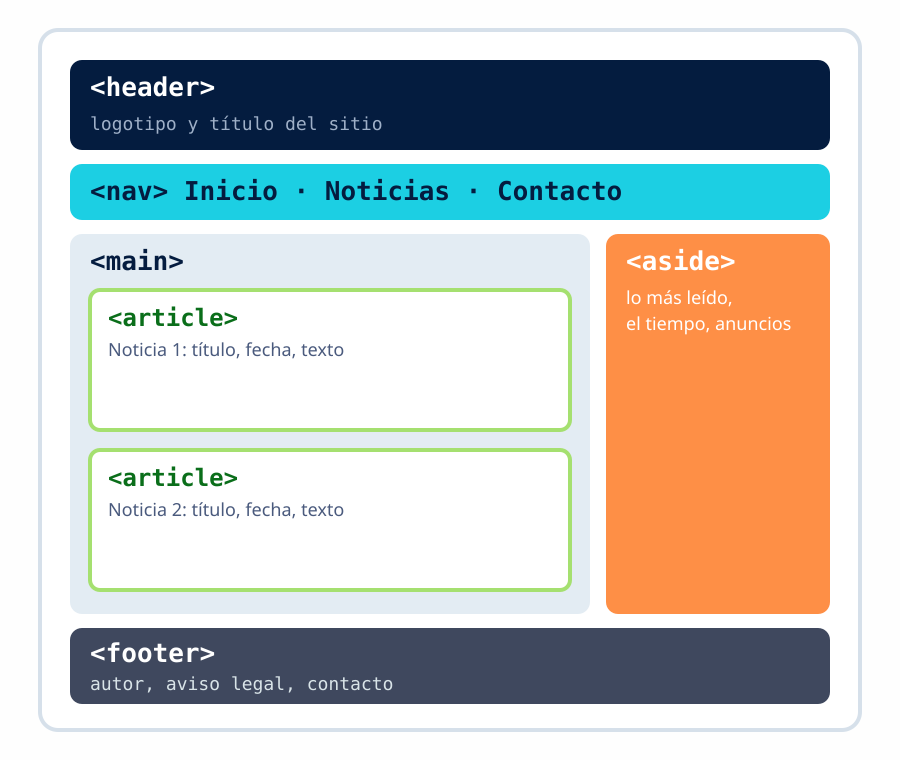
Figura 1.7. Una portada de periódico digital con sus zonas.
Imágenes, tablas y semántica
La misma página, sin semántica y con semántica
<div id="cabecera">
<h1>El Diario del Instituto</h1>
<div id="menu">
<a href="#">Inicio</a> <a href="#">Noticias</a>
</div>
</div>
<div id="contenido">
<div class="noticia">
<h2>Empieza el curso</h2>
<p>…</p>
</div>
</div>
<div id="lateral">Lo más leído</div>
<div id="pie">© 2026</div>
<header>
<h1>El Diario del Instituto</h1>
<nav>
<a href="#">Inicio</a> <a href="#">Noticias</a>
</nav>
</header>
<main>
<article>
<h2>Empieza el curso</h2>
<p>…</p>
</article>
</main>
<aside>Lo más leído</aside>
<footer>© 2026</footer>
Se ven exactamente igual. Pero en la de la derecha un buscador sabe cuál es el contenido principal y un lector de pantalla puede saltar directamente al menú.
Imágenes, tablas y semántica
Validar tu página
El navegador no avisa de los errores. El validador del W3C sí: te dice línea a línea qué está mal según el estándar.
- 1.Entra en
validator.w3.org - 2.Pega el código (Validate by direct input) o sube el archivo
- 3.Lee los errores de arriba abajo. Corrige el primero y vuelve a validar: un error arrastra a los siguientes
- 4.Repite hasta que no queden errores. Los avisos (warnings) son recomendaciones
Se usa para corregir el cuaderno y cuenta en la rúbrica de la página del aula.
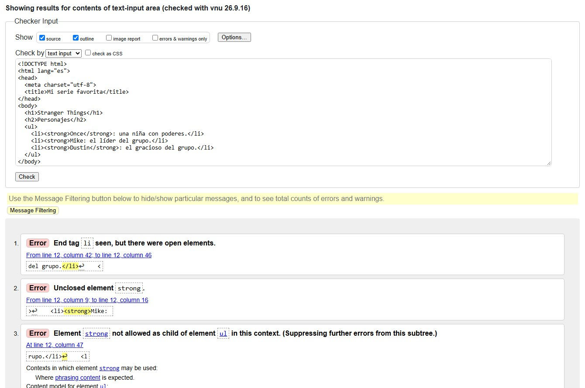
Figura 1.8. Falta cerrar un strong en la línea 12 y el validador da tres errores: por eso se corrige el primero y se vuelve a validar.
Encuentra el error
Cada fragmento tiene un error. Pulsa la línea donde está y elige de qué tipo es. Pista te marca la línea; Resolver lo explica.
Ejemplo resuelto
<h2>Personajes</h2> <li>Tux</li> <li>Gnu</li>
Línea 2: un <li> fuera de una lista. Falta el <ul> que los envuelva.
Cuaderno de ejercicios: del 6 al 9
Ahora la tabla, las fotos y la página entera. Las fotos, de Wikimedia Commons con su crédito. Desde aquí, cada pen pasa por el validador antes de darlo por terminado.
Duración
2 sesiones
Modalidad
Individual, en el aula
Entrega
Con el índice, al final de la unidad
Material
CodePen y validador
- 06Una tabla. Tema: tu móvil o tu consola. h1, un párrafo y un h2 «Ficha técnica» con una
table:caption«Datos» y cuatro filastr, cada una con el nombre del dato enthy el dato entd. Tablas para datos en parejas o en cuadrícula. Sin bordes: eso es CSS. - 07Tu horario de clase. Cabecera con th (Hora, Lunes… Viernes) y una fila por hora: la hora en th, los módulos en td. El recreo ocupa todas las columnas con
colspan; un módulo doble ocupa dos filas conrowspan. Es el «combinar celdas» de cualquier programa de tablas. - 08Fotos con su pie. Tema: dos fotos de tu ciudad. A la página del 2 añade un h2 «Fotos» y dos
figure:imgde Wikimedia Commons conaltque la describa, yfigcaptioncon autor, fuente y licencia. alt es lo que se lee si la foto no carga o no se ve. El crédito es obligatorio: la foto no es tuya. - 09La página entera. Tema: tu ciudad, desde cero, en 50 minutos. Esqueleto completo y cuatro zonas:
headercon h1 y subtítulo,maincon apartados, lista, tabla y enlaces,asidecon las dos fotos,footercon «Autor de la página». Las zonas dicen qué es cabecera, qué es lo principal y qué es el pie; WordPress está hecho así. Es el ensayo del examen.
Formularios
Para qué sirve un formulario
Todo lo que escribes en una web va en un formulario: la caja del buscador, el inicio de sesión, la dirección de envío, un comentario. Es la forma habitual de que una página recoja datos del usuario.
- 1.Rellenas los campos y pulsas el botón
- 2.El navegador empaqueta los datos y los envía al servidor en una petición
- 3.Un programa en el servidor hace algo con ellos: los guarda, busca, comprueba la contraseña
- 4.El servidor responde con otra página
En esta unidad escribimos la parte del navegador. El programa del servidor lo pone WordPress en la UT3; ahora los datos los enviaremos a un sitio de pruebas para verlos llegar.
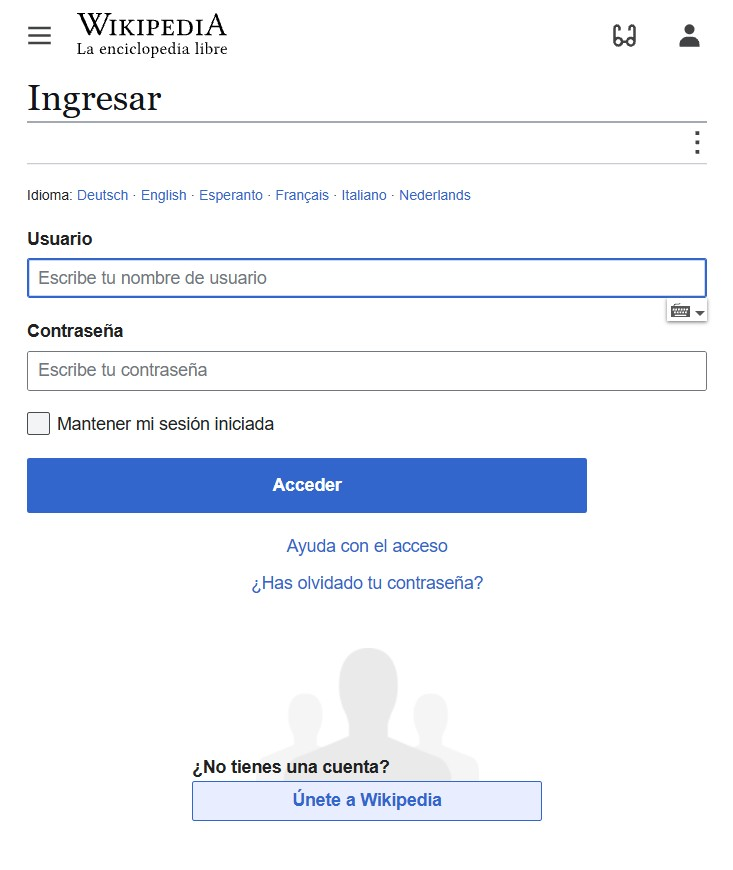
Figura 1.9. El inicio de sesión de Wikipedia: dos campos con su etiqueta, una casilla y un botón. Todo lo que hay es label, input y button.
Formularios
El formulario mínimo
<form action="https://webhook.site/tu-url" method="post"> <label for="nombre">Nombre</label> <input id="nombre" name="nombre" type="text"> <label for="correo">Correo</label> <input id="correo" name="correo" type="email"> <button type="submit">Enviar</button> </form>
- —
action: a dónde van los datos.method: cómo (GET o POST) - —
<label for>con eliddel campo: el texto se hace clicable y es accesible - —
namees lo que viaja. Sin name, el dato no se envía aunque el campo se vea
Formularios
Tipos de campo
<form> <label>Usuario <input type="text" name="usuario"></label><br> <label>Contraseña <input type="password" name="clave"></label><br> <label>Correo <input type="email" name="correo"></label><br> <label>Edad <input type="number" name="edad" min="16" max="99"></label><br> <label>Fecha <input type="date" name="fecha"></label><br> <label>Hora <input type="time" name="hora"></label><br> <label>Color <input type="color" name="color"></label><br> <label>Nota <input type="range" name="nota" min="1" max="10"></label><br> <label>Teléfono <input type="tel" name="tel"></label><br> <label>Web <input type="url" name="web"></label><br> <label>Foto <input type="file" name="foto"></label> </form>
- —Cada
typecambia lo que hace el navegador: teclado numérico en el móvil, calendario, comprobar que el correo tiene @, ocultar la contraseña - —Un
<input>dentro del<label>no necesitaforniid - —También:
search,hidden,datetime-local
Formularios
Atributos que ayudan: el navegador valida antes de enviar
<form>
<label for="n">Nombre</label>
<input id="n" name="nombre" type="text"
placeholder="Nombre y apellidos"
required maxlength="60" autofocus>
<label for="e">Correo</label>
<input id="e" name="correo" type="email"
placeholder="tu@correo.es" required>
<label for="p">Plazas</label>
<input id="p" name="plazas" type="number"
value="1" min="1" max="4">
<button>Reservar</button>
</form>
<p>Pulsa Reservar con el nombre vacío.</p>
- —
required: no se envía vacío, el navegador avisa.min,max,maxlength: límites - —
placeholder: texto de ejemplo en gris. No sustituye al<label>: desaparece al escribir - —
value: valor inicial.autofocus: el cursor empieza ahí
Formularios
Elegir una opción o varias
<form>
<p>¿Qué nota le das al juego?</p>
<label><input type="radio" name="nota" value="5"> 5</label>
<label><input type="radio" name="nota" value="7" checked> 7</label>
<label><input type="radio" name="nota" value="10"> 10</label>
<p>¿En qué plataformas lo has jugado?</p>
<label><input type="checkbox" name="plataforma" value="pc"> PC</label>
<label><input type="checkbox" name="plataforma" value="movil"> Móvil</label>
<p><label for="fav">Personaje favorito</label>
<select id="fav" name="favorito">
<option value="">Elige…</option>
<optgroup label="Héroes">
<option value="tux">Tux</option>
<option value="gnu">Gnu</option>
</optgroup>
<option value="nolok">Nolok</option>
</select></p>
</form>
- —
radio: una sola opción. El grupo lo forma el mismo name; cada una lleva suvalue - —
checkbox: varias a la vez.checkedpreselecciona - —
<select>con<option>: lista desplegable;<optgroup>agrupa
Formularios
Texto largo, grupos de campos y botones
<form>
<fieldset>
<legend>Tu opinión</legend>
<label for="c">Comentario</label><br>
<textarea id="c" name="comentario"
rows="4" cols="40"
placeholder="Cuéntanos qué te ha parecido"></textarea>
</fieldset>
<button type="submit">Enviar</button>
<button type="reset">Borrar</button>
<button type="button">No hace nada (sin JavaScript)</button>
</form>
- —
<textarea>: varias líneas. Se abre y se cierra; el texto inicial va dentro - —
<fieldset>y<legend>agrupan campos relacionados con un título - —
submitenvía,resetborra,buttonespera a JavaScript (UT6)
Formularios
GET y POST: por dónde viajan los datos
GET: en la dirección
Los datos van en la URL, tras el interrogante, como pares nombre=valor separados por &.
buscar.html?q=html&pagina=2
- ●Para buscar y filtrar: la URL se puede copiar, compartir y guardar
- ●Se queda en el historial. Nunca para contraseñas
POST: en el cuerpo
Los datos van dentro de la petición, no en la URL. No se ven en la barra de direcciones.
POST /alta.php
nombre=Ana&correo=ana%40ejemplo.es
- ●Para enviar datos: un alta, un comentario, un archivo, una contraseña
- ●Se ve en DevTools, pestaña Red, en el Payload (carga útil) de la petición
Formularios
Verlo llegar al otro lado
Sin un programa en el servidor, los datos no van a ningún sitio. Para verlos llegar usamos un servicio de pruebas (webhook.site): te da una URL que muestra todo lo que recibe.
- 1.El profesor abre
webhook.sitey copia la URL única que le da - 2.La pone en el
actiondel formulario - 3.Rellena y envía. En la otra pestaña aparece la petición con los pares nombre=valor
- 4.Cambia el método a GET y repite: ahora los datos van en la URL
Figura 1.10. Lo que recibe el servidor cuando pulsas Enviar. El ejercicio 12 del cuaderno apunta a esta URL.
Formularios
Cómo se empareja
En el ejercicio siguiente hay seis etiquetas o atributos y seis funciones desordenadas. Para cada etiqueta, elige en el desplegable lo que hace. Piensa en una página real: ¿dónde la has usado esta unidad?
Dos ejemplos resueltos
required → no se puede enviar si el campo está vacío. Lo has visto en la diapositiva de atributos: el navegador avisa.
<label> → texto del campo, clicable, unido al campo por for e id. Lo has usado en todos los formularios de este bloque.
Empareja cada etiqueta con su función
Seis parejas por juego. Otro ejercicio cambia de tema: formularios, estructura y texto, imágenes y tablas, enlaces y listas.
Cuaderno: el formulario y el índice
El último ejercicio y el índice del cuaderno. El formulario es el mismo que pide la página del examen práctico.
Duración
1 sesión
Modalidad
Individual, en el aula
Entrega
URL del pen índice en Classroom, hoy
Material
CodePen y validador
- 10El formulario de opinión. Sobre la página del 9. Al final del main, un h2 «Da tu opinión» y un
formcon: diez botones redondos (input type="radio") del 1 al 10, todos con el mismonamey cada uno con sulabel; un label «Comentario» con untextarea; y unbutton«Enviar opinión». Elactionapunta a la dirección que te dé el profesor: envíalo y comprueba que llega. El formulario es la única parte que el visitante puede rellenar. name es el nombre con el que viaja cada dato: sin name se pierde. label une el texto con su casilla. - ✓Índice. Un pen más con h1 «Mi cuaderno de HTML», tu nombre, la fecha y una lista numerada con un enlace a cada uno de los diez pens. Es lo que entregas en Classroom.
Mi videojuego favorito
Haz una página con la misma estructura que la captura de la diapositiva siguiente, sobre tu videojuego favorito. Todo en un solo index.html, sin CSS.
- —Cabecera con título y subtítulo; contenido principal con encabezados, párrafos con énfasis, lista de personajes, tabla de datos, lista de enlaces y formulario de valoración
- —Lateral con dos capturas del juego con pie y crédito; pie de página con el autor
- —Etiquetas semánticas (header, main, aside, footer), un solo h1, imágenes con alt, formulario con label y name
Duración
1 sesión (50 min)
Modalidad
Individual, en el aula
Entrega
index.html en Classroom al acabar
Vale
20 % de la unidad
- Permitido: VS Code o CodePen en modo incógnito, esta presentación, buscar imágenes e información del juego.
- No permitido: IA, buscar código o referencias de HTML, preguntar a un compañero (se considera copiar).
- Quien no la termine la repite en la sesión 18 con otro tema.
Examen de teoría de la unidad
Preguntas de opción múltiple sobre estas diapositivas, en clase. Sin apuntes, sin presentación y sin IA.
Para prepararlo: repasa el resumen, vuelve a hacer los cuatro ejercicios interactivos y los tres quiz, y lee el código de tus pens intentando explicar cada etiqueta.
Duración
1 sesión (50 min)
Formato
Test de opción múltiple
Material
Ninguno
Modo
Individual, en el aula
Unidad 1
Resumen de la unidad
Internet es la red; la web es uno de sus servicios: documentos enlazados que se piden con HTTP y se escriben en HTML.
Para ver una página hacen falta un dominio, el DNS que lo traduce a una IP y un servidor que responde con un código: 200 si va bien, 404 si no existe.
Una página estática es un archivo; una dinámica la genera un programa. Un gestor de contenidos necesita servidor web, PHP, base de datos, dominio y acceso al servidor.
HTML dice qué es cada cosa, no cómo se ve. Una página válida tiene doctype, head y body, etiquetas cerradas y bien anidadas, y pasa el validador.
Un solo h1, énfasis con significado, imágenes con alt, tablas solo para datos, y etiquetas semánticas para que buscadores y lectores de pantalla entiendan la página.
Un formulario recoge datos con label, name y el tipo de campo adecuado; el navegador valida y los envía por GET (en la URL) o POST (en el cuerpo).
Para ampliar
Recursos y documentación
Cuando dudes de una etiqueta, la respuesta está en MDN. Cuando dudes de si tu página está bien, en el validador.
Enlaces consultados el 11 de septiembre de 2026.
- HTMLMDN Web Docs, referencia de elementos HTML, en español: developer.mozilla.org/es/docs/Web/HTML
- ValidadorValidador de HTML del W3C: validator.w3.org
- PublicarDocumentación de GitHub Pages: crear un sitio y configurar la fuente de publicación. docs.github.com/pages
- HTTPRFC 9110, HTTP Semantics, IETF, junio de 2022: rfc-editor.org/rfc/rfc9110
- HistoriaCERN, Web history (web30.web.cern.ch) y la primera página, en info.cern.ch
- VídeoGilada, «El secreto de internet que siempre tuviste frente a tus ojos», YouTube, julio de 2025, 6:35. youtube.com/watch?v=oiY0lIzZgW0. Consultado el 12 de septiembre de 2026. Fazt, «Modelo Cliente Servidor, Explicación Simple», YouTube, diciembre de 2017, 4:40. youtube.com/watch?v=49zdlyLSwhQ. Consultado el 20 de septiembre de 2026.
- DatosITU, Facts and Figures 2025; StatCounter, cuota de navegadores, agosto de 2026; W3Techs, servidores web y lenguajes de servidor; INCIBE, «Navegadores y Deep Web», 2019.
- Ejemplo«Mi ciudad natal», página de solo HTML en CodePen: codepen.io/rauldemarras/pen/qEZgPjB
- NormativaCurrículo del ciclo de Sistemas Microinformáticos y Redes en Castilla y León, módulo 0228. BOCyL n.º 173, 9 de septiembre de 2009.